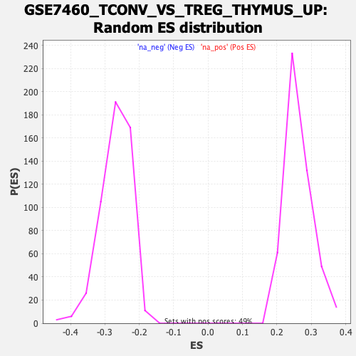

Profile of the Running ES Score & Positions of GeneSet Members on the Rank Ordered List
| Dataset | qlf.KOd4vsWTd4_gsea_score |
| Phenotype | NoPhenotypeAvailable |
| Upregulated in class | na_neg |
| GeneSet | GSE7460_TCONV_VS_TREG_THYMUS_UP |
| Enrichment Score (ES) | -0.65236616 |
| Normalized Enrichment Score (NES) | -2.4281666 |
| Nominal p-value | 0.0 |
| FDR q-value | 0.0 |
| FWER p-Value | 0.0 |
| SYMBOL | RANK IN GENE LIST | RANK METRIC SCORE | RUNNING ES | CORE ENRICHMENT | |
|---|---|---|---|---|---|
| 1 | CHST15 | 158 | 4.237 | 0.0023 | No |
| 2 | RREB1 | 241 | 3.693 | 0.0097 | No |
| 3 | CDYL2 | 552 | 2.750 | -0.0088 | No |
| 4 | ANXA6 | 868 | 2.174 | -0.0302 | No |
| 5 | PTPN6 | 1261 | 1.665 | -0.0611 | No |
| 6 | ZNRF3 | 1492 | 1.459 | -0.0772 | No |
| 7 | GGT1 | 1633 | 1.348 | -0.0851 | No |
| 8 | TACC2 | 1686 | 1.311 | -0.0847 | No |
| 9 | TET1 | 2004 | 1.077 | -0.1109 | No |
| 10 | TTC7B | 2186 | 0.965 | -0.1243 | No |
| 11 | NRAS | 2479 | 0.813 | -0.1491 | No |
| 12 | LYPD6B | 2531 | 0.786 | -0.1508 | No |
| 13 | DUSP6 | 2831 | 0.658 | -0.1769 | No |
| 14 | THEMIS | 3059 | 0.577 | -0.1964 | No |
| 15 | SLC9A6 | 3161 | 0.538 | -0.2039 | No |
| 16 | ENC1 | 3702 | 0.370 | -0.2545 | No |
| 17 | IRGQ | 3774 | 0.350 | -0.2599 | No |
| 18 | P2RX4 | 3788 | 0.346 | -0.2597 | No |
| 19 | PPP1R13B | 3861 | 0.327 | -0.2653 | No |
| 20 | PEX12 | 3942 | 0.306 | -0.2718 | No |
| 21 | MFSD3 | 3968 | 0.299 | -0.2730 | No |
| 22 | MINK1 | 4497 | 0.170 | -0.3232 | No |
| 23 | USP12 | 4546 | 0.156 | -0.3272 | No |
| 24 | CCDC71L | 4593 | 0.145 | -0.3310 | No |
| 25 | TANC1 | 4600 | 0.144 | -0.3310 | No |
| 26 | COMMD9 | 4879 | 0.092 | -0.3575 | No |
| 27 | FAM120AOS | 4981 | 0.073 | -0.3669 | No |
| 28 | NXF1 | 5007 | 0.068 | -0.3690 | No |
| 29 | PIGK | 5046 | 0.061 | -0.3725 | No |
| 30 | PIP4K2A | 5167 | 0.041 | -0.3839 | No |
| 31 | TMEM170B | 5187 | 0.038 | -0.3855 | No |
| 32 | OVGP1 | 5280 | 0.023 | -0.3943 | No |
| 33 | SLC39A14 | 5305 | 0.018 | -0.3966 | No |
| 34 | OTUD1 | 5320 | 0.016 | -0.3979 | No |
| 35 | RAP2C | 5394 | 0.001 | -0.4049 | No |
| 36 | AAK1 | 5457 | -0.009 | -0.4108 | No |
| 37 | CNOT3 | 5627 | -0.036 | -0.4270 | No |
| 38 | SLCO3A1 | 5756 | -0.058 | -0.4391 | No |
| 39 | ARL5B | 5844 | -0.071 | -0.4472 | No |
| 40 | ITGB3 | 5874 | -0.075 | -0.4497 | No |
| 41 | METTL9 | 5949 | -0.088 | -0.4565 | No |
| 42 | SLC20A1 | 5993 | -0.096 | -0.4602 | No |
| 43 | KCNMB4 | 6041 | -0.104 | -0.4643 | No |
| 44 | FBXO9 | 6171 | -0.128 | -0.4763 | No |
| 45 | DYRK2 | 6249 | -0.145 | -0.4831 | No |
| 46 | AP4E1 | 6271 | -0.148 | -0.4845 | No |
| 47 | ELK1 | 6277 | -0.149 | -0.4844 | No |
| 48 | RAPGEF4 | 6424 | -0.184 | -0.4977 | No |
| 49 | CSRNP2 | 6428 | -0.184 | -0.4972 | No |
| 50 | MTUS2 | 6642 | -0.234 | -0.5168 | No |
| 51 | EIF2AK3 | 6815 | -0.279 | -0.5322 | No |
| 52 | SLC30A1 | 6943 | -0.313 | -0.5432 | No |
| 53 | APBB3 | 7038 | -0.338 | -0.5509 | No |
| 54 | XKRX | 7116 | -0.363 | -0.5568 | No |
| 55 | KREMEN1 | 7151 | -0.372 | -0.5585 | No |
| 56 | ZNF512B | 7176 | -0.379 | -0.5593 | No |
| 57 | ZBTB33 | 7270 | -0.406 | -0.5666 | No |
| 58 | KBTBD7 | 7296 | -0.416 | -0.5673 | No |
| 59 | SOS1 | 7373 | -0.443 | -0.5728 | No |
| 60 | MFSD8 | 7421 | -0.459 | -0.5754 | No |
| 61 | RHOT2 | 7444 | -0.466 | -0.5756 | No |
| 62 | UBE2D1 | 7474 | -0.481 | -0.5764 | No |
| 63 | ARHGDIB | 7751 | -0.592 | -0.6006 | No |
| 64 | DMTF1 | 7841 | -0.627 | -0.6065 | No |
| 65 | SLC35C1 | 7856 | -0.635 | -0.6053 | No |
| 66 | TLR6 | 8158 | -0.767 | -0.6311 | No |
| 67 | ATP6V0A2 | 8175 | -0.773 | -0.6295 | No |
| 68 | GPR18 | 8187 | -0.781 | -0.6273 | No |
| 69 | ADCY7 | 8208 | -0.794 | -0.6259 | No |
| 70 | RPH3AL | 8274 | -0.829 | -0.6288 | No |
| 71 | ANKRD13D | 8351 | -0.869 | -0.6325 | No |
| 72 | PDE3B | 8558 | -1.007 | -0.6482 | Yes |
| 73 | ABHD14B | 8580 | -1.017 | -0.6460 | Yes |
| 74 | TRAM1 | 8593 | -1.023 | -0.6429 | Yes |
| 75 | CHD7 | 8612 | -1.036 | -0.6404 | Yes |
| 76 | MLLT11 | 8625 | -1.045 | -0.6372 | Yes |
| 77 | ARHGAP29 | 8657 | -1.063 | -0.6358 | Yes |
| 78 | ANKRD11 | 8677 | -1.074 | -0.6331 | Yes |
| 79 | TERF1 | 8744 | -1.114 | -0.6349 | Yes |
| 80 | PXK | 8865 | -1.213 | -0.6414 | Yes |
| 81 | KCNB1 | 8931 | -1.258 | -0.6425 | Yes |
| 82 | ZHX3 | 8947 | -1.272 | -0.6387 | Yes |
| 83 | BTBD11 | 8960 | -1.284 | -0.6345 | Yes |
| 84 | SIKE1 | 8997 | -1.318 | -0.6325 | Yes |
| 85 | SIDT2 | 9000 | -1.320 | -0.6272 | Yes |
| 86 | ARL4C | 9037 | -1.341 | -0.6251 | Yes |
| 87 | ACAP1 | 9040 | -1.344 | -0.6198 | Yes |
| 88 | NEURL1B | 9072 | -1.383 | -0.6170 | Yes |
| 89 | TAPT1 | 9076 | -1.386 | -0.6116 | Yes |
| 90 | FRAT2 | 9099 | -1.405 | -0.6078 | Yes |
| 91 | GUCD1 | 9150 | -1.458 | -0.6066 | Yes |
| 92 | INPP5B | 9163 | -1.471 | -0.6017 | Yes |
| 93 | NAP1L4 | 9233 | -1.557 | -0.6019 | Yes |
| 94 | GPRC5B | 9285 | -1.604 | -0.6002 | Yes |
| 95 | LYST | 9329 | -1.649 | -0.5975 | Yes |
| 96 | ACVR1B | 9432 | -1.776 | -0.5999 | Yes |
| 97 | OSBPL9 | 9457 | -1.810 | -0.5947 | Yes |
| 98 | PITPNC1 | 9467 | -1.824 | -0.5880 | Yes |
| 99 | NFE2L2 | 9486 | -1.852 | -0.5821 | Yes |
| 100 | SCML4 | 9509 | -1.891 | -0.5764 | Yes |
| 101 | PIK3IP1 | 9532 | -1.918 | -0.5705 | Yes |
| 102 | TMEM59 | 9587 | -2.021 | -0.5674 | Yes |
| 103 | TNFRSF1A | 9604 | -2.049 | -0.5604 | Yes |
| 104 | TDRP | 9631 | -2.089 | -0.5543 | Yes |
| 105 | NSG2 | 9699 | -2.219 | -0.5515 | Yes |
| 106 | EGLN2 | 9710 | -2.236 | -0.5432 | Yes |
| 107 | LRRC8A | 9728 | -2.276 | -0.5354 | Yes |
| 108 | CD47 | 9735 | -2.292 | -0.5265 | Yes |
| 109 | PDLIM4 | 9766 | -2.355 | -0.5196 | Yes |
| 110 | ARHGEF11 | 9768 | -2.358 | -0.5099 | Yes |
| 111 | NPC2 | 9786 | -2.396 | -0.5016 | Yes |
| 112 | TRIM56 | 9788 | -2.405 | -0.4918 | Yes |
| 113 | SGMS1 | 9801 | -2.435 | -0.4828 | Yes |
| 114 | NSF | 9870 | -2.557 | -0.4788 | Yes |
| 115 | MYLIP | 9881 | -2.571 | -0.4691 | Yes |
| 116 | VAMP1 | 9885 | -2.585 | -0.4586 | Yes |
| 117 | CNGA1 | 9919 | -2.672 | -0.4507 | Yes |
| 118 | QSOX1 | 9944 | -2.758 | -0.4416 | Yes |
| 119 | TSPAN14 | 9964 | -2.804 | -0.4318 | Yes |
| 120 | SPTBN1 | 9971 | -2.844 | -0.4206 | Yes |
| 121 | P4HA2 | 10000 | -2.907 | -0.4113 | Yes |
| 122 | EGR1 | 10012 | -2.936 | -0.4001 | Yes |
| 123 | SETD4 | 10024 | -2.959 | -0.3889 | Yes |
| 124 | CEP97 | 10032 | -2.992 | -0.3772 | Yes |
| 125 | AP3D1 | 10038 | -3.021 | -0.3651 | Yes |
| 126 | GRK6 | 10039 | -3.026 | -0.3526 | Yes |
| 127 | IL1RL2 | 10082 | -3.190 | -0.3434 | Yes |
| 128 | CYP2S1 | 10110 | -3.290 | -0.3324 | Yes |
| 129 | HP1BP3 | 10125 | -3.370 | -0.3197 | Yes |
| 130 | CTDSP2 | 10128 | -3.379 | -0.3059 | Yes |
| 131 | FAM78A | 10187 | -3.627 | -0.2965 | Yes |
| 132 | VIPR1 | 10189 | -3.628 | -0.2815 | Yes |
| 133 | ACVRL1 | 10199 | -3.677 | -0.2671 | Yes |
| 134 | RCBTB2 | 10238 | -3.907 | -0.2546 | Yes |
| 135 | ZFP36 | 10300 | -4.298 | -0.2427 | Yes |
| 136 | FAM102A | 10309 | -4.382 | -0.2253 | Yes |
| 137 | SLC12A7 | 10319 | -4.441 | -0.2077 | Yes |
| 138 | EZH1 | 10341 | -4.586 | -0.1907 | Yes |
| 139 | SGK1 | 10359 | -4.746 | -0.1727 | Yes |
| 140 | ST8SIA1 | 10366 | -4.783 | -0.1534 | Yes |
| 141 | LPAR6 | 10370 | -4.832 | -0.1337 | Yes |
| 142 | DDX58 | 10390 | -5.031 | -0.1146 | Yes |
| 143 | SATB1 | 10434 | -5.598 | -0.0956 | Yes |
| 144 | SLC16A5 | 10436 | -5.613 | -0.0724 | Yes |
| 145 | TMEM63A | 10445 | -5.761 | -0.0492 | Yes |
| 146 | TIMP2 | 10453 | -5.962 | -0.0252 | Yes |
| 147 | CPM | 10490 | -7.329 | 0.0017 | Yes |
